在ACK集群中部署Jenkins
概述
Jenkins是一个开源软件项目，是基于Java开发的一种持续集成工具，用于监控持续重复的工作，旨在提供一个开放易用的软件平台，使软件项目可以进行持续集成。Jenkins在计算巢上提供了社区版服务，您无需自行配置云主机，即可在计算巢上快速部署Jenkins服务、实现运维监控，从而方便地基于Jenkins搭建您自己的应用。本文向您介绍如何开通计算巢上的Jenkins社区版服务，以及部署流程和使用说明。
RAM账号所需权限
Jenkins服务需要对ECS、VPC等资源进行访问和创建操作，若您使用RAM用户创建服务实例，需要在创建服务实例前，对使用的RAM用户的账号添加相应资源的权限。添加RAM权限的详细操作，请参见为RAM用户授权 。所需权限如下表所示。
| 权限策略名称 | 备注 |
|---|---|
| AliyunECSFullAccess | 管理云服务器服务（ECS）的权限 |
| AliyunVPCFullAccess | 管理专有网络（VPC）的权限 |
| AliyunROSFullAccess | 管理资源编排服务（ROS）的权限 |
| AliyunComputeNestUserFullAccess | 管理计算巢服务（ComputeNest）的用户侧权限 |
| AliyunCloudMonitorFullAccess | 管理云监控（CloudMonitor）的权限 |
| AliyunCSFullAccess | 管理云监控（CloudMonitor）的权限 |
部署Jenkins服务
单击部署链接 ，进入服务实例部署界面，选择容器集群版，根据界面提示填写参数完成部署。
参数说明
您在创建服务实例的过程中，需要配置服务实例信息。下文介绍Jenkins社区版服务实例输入参数的详细信息。
| 参数组 | 示例 | 说明 |
|---|---|---|
| 服务实例名称 | jenkins-3pgt | 实例的名称 |
| 地域 | 华东1（杭州） | 选中服务实例的地域，建议就近选中，以获取更好的网络延时。 |
| k8s集群Id | c377ad508***** | 部署应用程序的K8s集群ID |
| 软件配置信息 | {"controller": { "serviceType": "LoadBalancer","admin": {"password": "Password"}},"persistence": {"size": "40Gi","storageClass": "alicloud-disk-essd"}} |
Jenkins软件的配置信息(账号为admin, 请修改密码) |
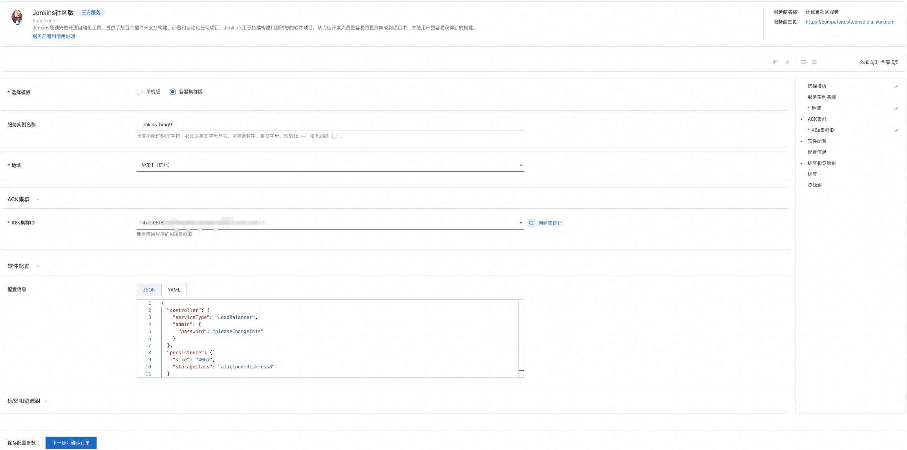
执行Jenkins构建任务
- 服务实例创建成功后，进入服务实例概览页，可以通过Endpoint和AdminPassword登录 Jenkins。
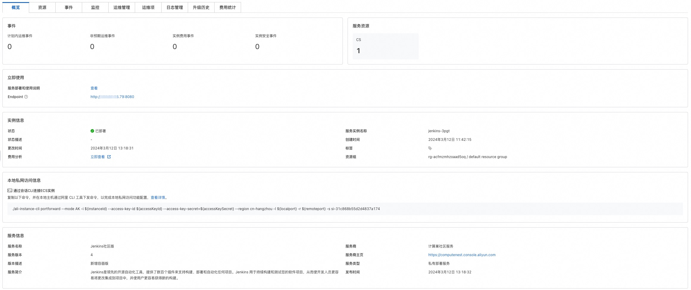
- 在左侧导航栏单击New Item。 在Enter an item name区域，输入名称（Demo），选择Pipeline类型，然后单击OK。
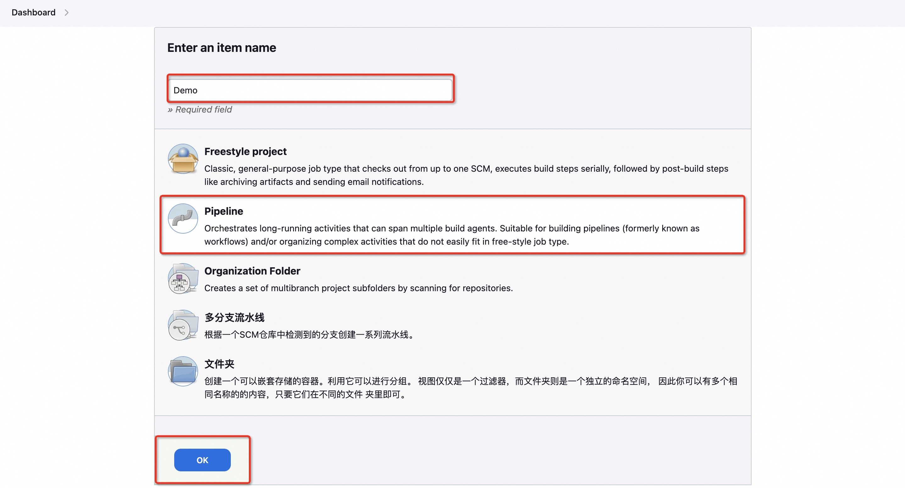
- 在页面顶部单击Pipeline页签，选择Hello World模板，配置pipeline，然后单击Save。
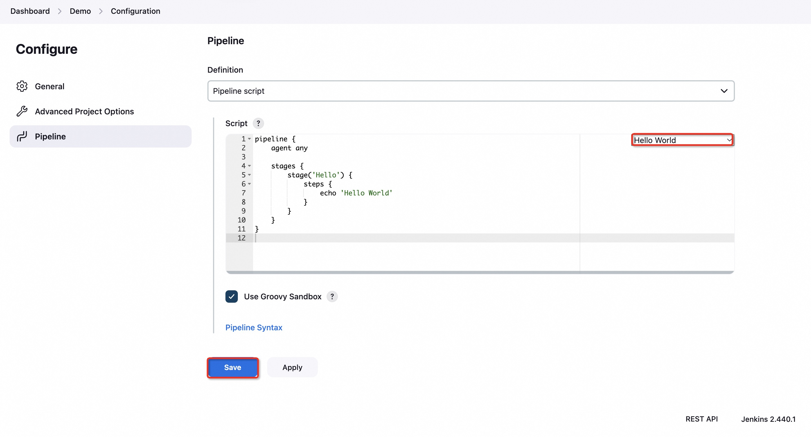
- 在页面左侧导航栏中，单击Build Now执行构建。在构建流水线时，Jenkins会默认从当前ACK集群中动态启动一个Slave Pod并执行构建任务，构建任务执行完毕后会立即释放该Slave Pod。
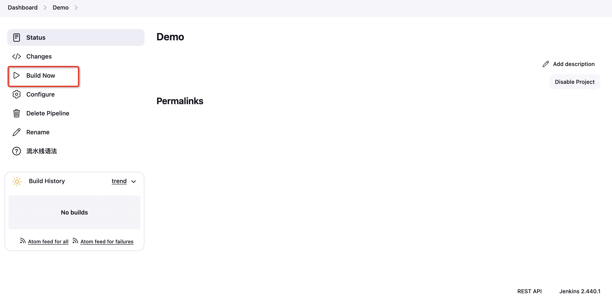
- 通过计算巢服务实例资源栏，登录到容器服务控制台。
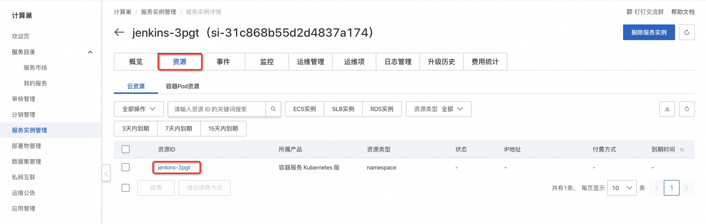
- 容器组中可查看由Jenkins构建任务创建的Slave Pod。
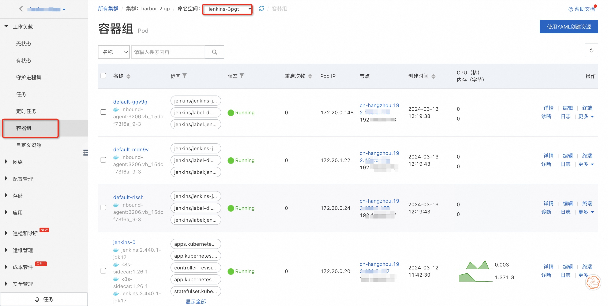
- 在Jenkins页面左侧导航栏中，单击Build History，单击目标流水线进入详情页面，然后单击Console Output即可查看流水线构建结果。
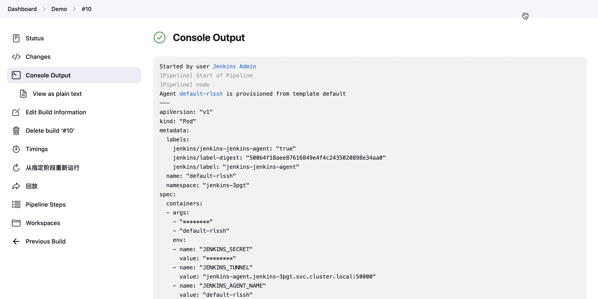
使用抢占式ECI实例执行Jenkins构建任务
注意事项： 使用该功能时，请确保集群中的VK（ack-virtual-node组件）为最新版本。关于如何升级组件，请参见管理组件。
- 参考配置说明(使用编辑操作)修改eci-profile中的selectors属性为：
json
[{
"name": "selector-eci",
"namespaceSelector": {
"matchLabels": {
"type": "eci"
}
},
"effect": {
"annotations": {
"k8s.aliyun.com/eci-spot-strategy": "SpotAsPriceGo"
}
}
}]
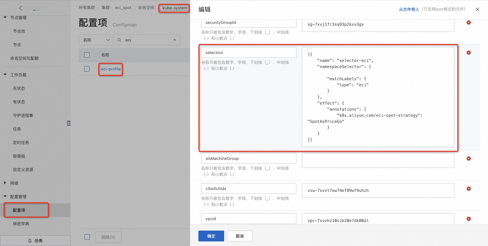
- 编辑Jenkins的命名空间并添加标签：
type：eci
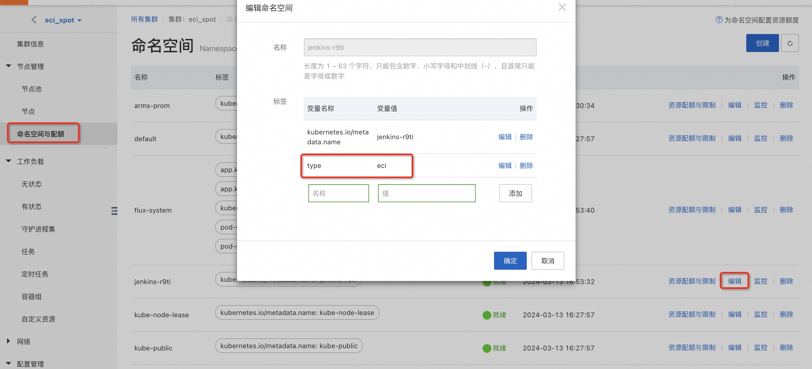
- 运行Jenkins构建任务，Jenkins会默认从当前ACK集群中动态启动一个抢占式ECI Pod并执行构建任务。
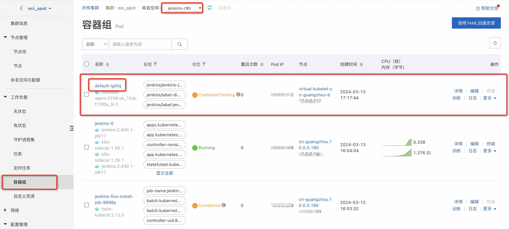
- 在ECI控制台可以看到对应的ECI实例，构建任务执行完毕后会立即释放该ECI实例。
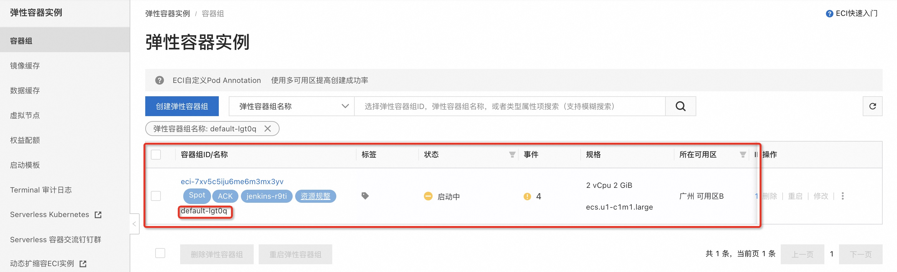